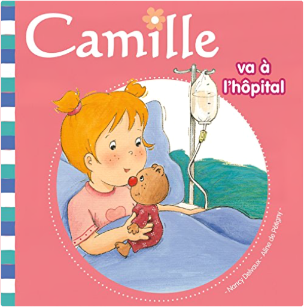

camille, tome 15 : va à l'hôpitalnancy delvaux, aline de pétigny  Depuis cette nuit, Camille est un peu malade, un peu plus que d'habitude, alors sa maman et son papa l'ont emmenée au service des urgences de l'hôpital le plus proche. |


 Made with Delicious Library
Made with Delicious LibraryNancy, State zipflap congrotus delicious library Thomas, Julien